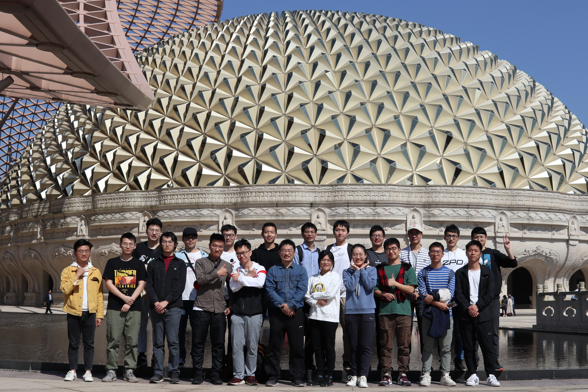

Brief Biography
-
Dr. Xiao is currently an associate professor in the Southeast University, China, and the vice director of the JiangSu Provincial Key Laboratory of Computer Network Technology (JSCNTL, 江苏省计算机网络技术重点实验室). He received his PhD degree on 2011 from the computing department of Hong Kong Polytechnic University, under the supervision of Prof. Bin Xiao and Prof. Jiannong Cao (IEEE fellow). Afterwards, he joined the computer science department of Georgia State University as a postdoctoral researcher, where he worked with Prof. Wenzhan Song (now chair professor of UGA) from February 2012 to March 2013. Then, he went to computer science department at University of Florida as a postdoctoral researcher, where he worked with Prof. Shigang Chen (IEEE fellow) from April 2013 to May 2014. He joined Southeast University of China on May 2014.
-
Ph.D. and M.Sc. Opportunity: We are looking for good candidates in the areas of big network data, in-network data processing, programmable network devices, traffic measurement in high-speed networks, streaming data processing, and big graph data processing. Please do not hesitate to send me your résumé if you are interested to join our laboratory.
- 招收博士/硕士研究生: 实验室关注如下科研方向 --- 网络流量大数据挖掘、网络全流量行为分析、流式数据处理、大图数据处理、网络异常行为分析、可编程网络设备等。实验室已搭建好万兆数据中心网、网络行为和日志数据集、大数据分析平台，以及Nvidia GeForce RTX3090的机器学习平台，供大家研究使用。感兴趣加入的同学请发送个人简历、项目经历和文章列表。
Latest News
- [2023-10-23] 在2023年度江苏省网络空间安全学会科技进步奖、优秀科技工作者、青年科技奖、优秀博/硕士学位论文奖评奖中，肖卿俊获得优秀科技工作者，蔡绪元、胡雄钦获得优秀硕士学位论文奖.
- [2023-10-05] A paper named “A generic sketch for estimating super-spreaders and per-flow cardinality distribution in high-speed data streams“ is accepted by Elsevier Computer Networks (CCF B).
- [2023-08-25] A general-program grant (No. 62372106) is received from National Natural Science Foundation of China (国家自然科学基金面上项目).
- [2023-07-30] A paper “Bucket-level Elastic Cuckoo Filter based on Consistent Hashing with Higher Memory Efficiency” is accepted by IEEE ICNP (CCF B).
- [2023-05-05] A paper “Multi-resolution odd sketch for mining extended Jaccard similarity of dynamic streaming sets” is accepted by IEEE TNSE (JCR Q1).
- [2023-04-29] A paper named “Online Detection of 1D and 2D Hierarchical Superspreaders in High-speed Networks” is accepted by APNET'23 (CCF C).
- [2023-04-09] A paper named “Accurate and O(1)-Time Query of Per-Flow Cardinality in High-speed Networks” is accepted by IEEE/ACM TON (CCF A).
- [2023-02-18] 项目“未知网络攻击行为的检测技术研究”（编号:CCF-NSFOCUS202206）获得 2022 年度 CCF-绿盟科技“鲲鹏”科研计划资助。
- [2022-12-25] 网信办网络安全协调局主持的一流网络安全学院建设示范项目稿件接收，标题是“关于国家级网络攻击行为的观察、思考及建议”
- [2022-12-23] A paper named “Universal and accurate sketch for estimating heavy hitters and moments in data streams” is accepted by IEEE/ACM TON (CCF A).
- [2022-11-25] 指导研究生蔡月啸、殷广成、李逸飞推进开发项目“基于On-vLLC Sketch的纯数据面网络流基数估算与DDoS攻击检测”项目，获得“Intel英特尔2022 P4中国黑客松Hackathon”比赛一等奖。
- [2022-11-11] 获得华为火花价值奖（三丫坡会战难题第二期）。利用基数估算和频数估算方法，实现华为自研开源Open GaussDB关系数据库的查询优化。
- [2022-07-15] 入选2022年江苏省科技副总项目，依托江苏省易安联网络技术有限公司
- [2022-04-09] A paper “Accurately identify time-decaying heavy hitters by decay-aware cuckoo filter along kicking path” accepted by IEEE IWQoS (CCF B)
- [2022-01-28] 江苏省“333高层次人才培养工程”第六期第三层次，培养管理期从2022从1月至2026年12月
- [2021-12-02] 江苏省科学技术厅的“2021江苏省科学技术奖”评选中，项目“Tbps级全流量态势智能感知关键技术的研发及产业化”获得一等奖（第3完成人）
- [2021-11-25] 2021年度江苏省计算机学会科学技术奖、优秀科技工作者、青年科技奖、优博、优硕评选中，获得"江苏省计算机学会青年科技奖"。
- [2021-06-18] A team of postgraduate students (王浩天、蔡绪元、苏豪、李逸飞) under my supervision have won the third prize in the 5th Future Network Technology Innovation Competition in China (第五届未来网络发展大会组委会主办的未来之光——未来网络科技创新大赛三等奖，奖金1万).
- [2021-04-27] A paper “Supporting Flow-Cardinality Queries with O(1) Time Complexity in High-speed Networks”is accepted by IEEE IWQoS (CCF B)
- [2021-01-31] A paper “Multi-resolution odd sketch for mining Jaccard similarities between dynamic streaming sets” is accepted by IEEE CSCWD (CCF C).
- [2021-01-15] Postgraduates in our lab (石唱、章轶群、汤梓寅) have won the third prize in the The First Competition of Collaborative Learning and Network Security in China (中国电子学会主办的第一届大学生协作学习与网络安全大赛三等奖).
- [2020-06-09] 在中国CICC指挥与控制学会2020年“全国科技工作者日”评选中，被授予“CICC科技精英奖”称号。
- [2019-11-06] A paper “Universal online sketch for tracking heavy hitters and estimating moments of data streams” is accepted by IEEE INFOCOM (CCF A).
- [2019-10-23] A paper “Estimating cardinality for arbitrarily large data stream with improved memory efficiency” is accepted by IEEE/ACM TON (CCF A).
- [2019-03-24] A paper “A memory-compact and fast sketch for online tracking heavy hitters in a data stream” accepted by ACM TURC'19 SIGCOMM China.
- [2019-01-19] "Estimating cardinality of arbitrary expression of multiple tag sets in a distributed RFID system" is accepted by IEEE/ACM TON (CCF A).
- [2018-12-16] Postgraduates in our lab named Zhiying Tang (唐志颖), Lin Wen (温霖) and Hanyu Xiao (肖涵宇) has won the second prize in the "postgraduate research competition for cybersecurity innovation and practice" of Jiangsu province (江苏省首届研究生网络空间安全科研创新实践大赛二等奖)
- [2018-11-15] "A protocol for simultaneously estimating moments and popular groups in a multigroup RFID system" accepted by IEEE/ACM TON (CCF A).
- [2018-08-20] A team of undergraduate students (郑浩、郑云川、朱一苇、吕顺、张诚天) under my supervision have won the first prize in the National Competition of Software-Defined Networks in China (教育部科技发展中心主办的全国高校软件定义网络应用创新SDN开发大赛一等奖).
- [2018-08-16] A general-program grant (No. 61872080) is received from National Natural Science Foundation of China (国家自然科学基金面上项目).
- [2017-09-07] "Cardinality estimation for elephant flows: A compact solution based on virtual register sharing" is accepted by IEEE/ACM TON (CCF A).
- [2017-06-22] Our HyperLogLog-TailCut algorithm (published in the proceedings of INFOCOM'17) for memory-efficient cardinality estimation of data streams was implemented by Go language on Github ---- https://github.com/axiomhq/hlltc. It becomes one of the popular hyperloglog implementations, according to two posts from Hacker News: https://news.ycombinator.com/item?id=14636699 and https://news.ycombinator.com/item?id=14637171
- [2017-05-27] "Adaptive joint estimation protocol for arbitrary pair of tag sets in a distributed RFID system" has been accepted by IEEE/ACM TON (CCF A).
- [2017-05-13] Received a "RISING STAR" award from ACM Nanjing chapter (国际计算机学会ACM南京分部2016年度科研新星奖) during the ACM Turing 50th Celebration Conference - China.
- [2016-11-26] "Better with fewer bits: Improving the performance of cardinality estimation of data streams" was accepted by IEEE INFOCOM'17 (CCF A).
- [2016-09-08] A coauthored book titled "Traffic measurement for big network data" has been accepted for publication on Springer [url].
- [2016-07-08] Invited to visit the University of Göttingen and give a talk about "Hyper-compact stream cardinality estimators for big network data".
- [2016-06-06] "Collision-aware churn estimation in large-scale dynamic RFID systems" was accepted by IEEE/ACM TON (CCF A).
- [2016-04-02] "Joint property estimation for multiple RFID tag sets using snapshots of variable lengths" was accepted by ACM MOBIHOC'16 (CCF B).
- [2015-08-27] Our stream processing algorithm, proposed in ACM SIGMETRICS'15 paper, has been adopted by developers from Xamarin.com to support their mobile phone application monitoring system. The open-source library can be downloaded at https://github.com/seiflotfy/vhll
- [2015-03-09] "Temporally or spatially dispersed joint RFID estimation using snapshots of variable lengths" was accepted by ACM MOBIHOC'15 (CCF B).
- [2015-02-09] "Hyper-compact virtual estimators for big network data based on register sharing" was accepted by ACM SIGMETRICS'15 (CCF B).
- [2014-07-01] "Estimating persistent spreads in high-speed networks" was accepted by IEEE ICNP'14 (CCF B).
Technical Program Committee Member
Research Interests
- Resource-constrained and real-time recognition of traffic pattern in high-speed communication networks
- Big data analysis, social network analysis, blockchain technology
- Novel applications and cross-layer protocol design in wireless powered embedded systems
- Interesting applications in wireless sensor networks, e.g., sensor localization, robot navigation, and human gesture recognition, to list a few
- Disruption-tolerant unicast/broadcast/multicast protocols in wireless mesh networks
- Design and model checking of business workflows in service-oriented architecture
Academic Projects Involved
- 2024.01-2028.12: 面向网络群体行为检测的图数据流概要和属性图社区发现理论研究
项目单位东南大学，国家自然基金面上项目 General Program Grant from National Natural Science Foundation of China (62372106)，项目主持
- 2021.07-2023.06: 大规模确定性骨干网络架构及关键技术研究
项目单位紫金山实验室，科技部国家重点研发计划项目 National Key Research and Development Plan (2020YFB1805204)，课题主持
- 2020.07-2023.06: High-speed traffic measurement and spatial-temporal behavioral analysis in software-defined networks
项目中文名：软件定义网络中的高速流量测量和跨时空域行为分析
Southeast University, Principle Investigator: Qingjun Xiao, funded by Science Foundation of Jiangsu Province of China (No. BK20201266).
- 2019.01-2022.12: Network streaming big data: Spatial and temporal joint processing, and performance optimization
项目中文名：海量网络流量数据的跨时空域协同分析和性能优化研究
Southeast University, Principle Investigator: Qingjun Xiao, funded by National Science Foundation of China (No. 61872080) , Amount: 640,000 RMB
- 2016.01-2018.12: Real-time Processing of Network Streaming Data in Temporal and Spatial Domains by Sketch Encoding and Mining
项目中文名：基于略图挖掘的在不同时空域的网络流式数据实时处理
Southeast University, Principle Investigator: Qingjun Xiao, funded by National Science Foundation of China (No. 61502098), Natural Science Foundation of Jiangsu Province (No. BK20150629) and China Postdoctoral Science Foundation (No. 2016M601699), Amount: 250,000 + 200,000 + 50,000 RMB
- 2018.07-2022.06: 物联网与智慧城市安全保障关键技术研究
项目单位中国科技大学，科技部重点研发计划项目 (2018YFB0803400)，2180万人民币，负责人李向阳，项目参与
- 2017.10-2021.09: 面向工业互联网的智能云端协作关键技术及系统
项目单位东南大学，科技部重点研发计划项目 (2017YFB1003001)，1816万人民币，负责人罗军舟，项目参与
- 2013-2014: Making Online Network Functions Fast and Compact
University of Florida, PI: Prof. Shigang Chen, funded by US NSF (NeTS 1115548), Amount: 400,000 USD.
- 2013-2014: Dare You Put Your Data in Cloud?
University of Florida, PI: Prof. Shigang Chen, funded by Cisco Systems Inc., Amount: 101,716 USD.
- 2012-2013: VolcanoSRI: 4D Volcano Tomography in a Large-Scale Sensor Network
Georgia State University, PI: Prof. Wenzhan Song, funded by USA NSF-CDI-1125165, Amount: 1,833,608 USD.
- 2007-2010: Wireless Sensor Network Localization and Robot Navigation
Hong Kong Polytechnic University, PI: Prof. Bin Xiao, funded by HongKong RGC PolyU.
Awards
- 2023: 在江苏省网络空间安全学会科技进步奖、优秀科技工作者、青年科技奖、优秀博/硕士学位论文奖评选中，获得优秀科技工作者称号
- 2022: 江苏省科学技术厅的“江苏省科学技术奖”评选中，项目“Tbps级全流量态势智能感知关键技术的研发及产业化”获得一等奖（第3完成人），2021-1-1-R3
- 2022: 入选2022年江苏省科技副总项目，依托江苏省易安联网络技术有限公司
- 2022: 江苏省“333高层次人才培养工程”第六期第三层次，培养管理期从2022从1月至2026年12月
- 2022: 获得华为火花价值奖（三丫坡会战难题第二期）
- 2021: 在2021年度江苏省计算机学会科学技术奖、优秀科技工作者、青年科技奖、优博、优硕评选中，获评 "江苏省计算机学会青年科技奖"
- 2020: 在中国CICC指挥与控制学会2020年“全国科技工作者日”评选中，被授予“CICC科技精英奖”称号
- 2016: "Academic Rising Star" award bestowed by ACM Nanjing Chapter for the entire Jiangsu province
- 2011: Academic presentation award - 2nd runner-up, in Dept. COMP of HKPU
- 2004: Scholarship for full-time postgraduate study in Shanghai JiaoTong University
- 1999 - 2002: Be awarded the first class scholarship for consecutive three years during undergraduate study
- 2000: Be awarded the first prize in advanced calculus competition of JiangSu province
Quote
-
"In my experience, most stuff that you start is mediocre for a really long time before it actually gets good. And you can't tell if it's going to be good until you're really late in the process. So the only thing you can do is have faith that if you do enough stuff, something will turn out great and really surprise you."
--- Ira Glass:
The Wrong Stuff
-
"A computer program is said to learn from experience E with respect to some task T and some performance measure P, if its performance on T, as measured by P, improves with experience E."
--- Tom Mitchell, Carnegie Mellon University
Refereed Publications from Other Sources

Books
Patents
- 肖卿俊, 张铨炜, 蔡月啸, "基于通用略图的高速网络逐流基数和分布函数的估算方法," 专利号2023113287278, 2023.
- 肖卿俊, 胡雄钦, "基于略图结构的网络流基数在线实时估算方法," 专利号ZL202110633705.7, 2022.
Conference Papers
- Guannan Pan, Yongchao Zhang, Qingjun Xiao*, “Bucket-level Elastic Cuckoo Filter based on Consistent Hashing with Higher Memory Efficiency”, accepted by IEEE ICNP (CCF B), 2023.
- Hao Su, Qingjun Xiao*, “Online Detection of 1D and 2D Hierarchical Superspreaders in High-speed Networks”, accepted by IEEE APNet (Asia-Pacific Workshop on Networking) (CCF C), 2023.
- Qingjun Xiao, Haotian Wang, Guannan Pan, “Accurately identify time-decaying heavy hitters by decay-aware cuckoo filter along kicking path”, in Proc. of IEEE IWQoS (CCF B), 2022. (acceptance rate 24.3%)
- Qingjun Xiao, Xiongqin Hu, Shigang Chen, “Supporting flow-cardinality queries with O(1) time complexity in high-speed networks”, in Proc. of IEEE IWQoS (CCF B), 2021. (acceptance rate 25%)
- Qingjun Xiao, Lin Wen, “Multi-resolution odd sketch for mining Jaccard similarities between dynamic streaming sets”, in Proc. of IEEE CSCWD (CCF C), 2021.
- Yu-e Sun, He Huang, Chaoyi Ma, Shigang Chen, Yang Du, Qingjun Xiao, “Online spread estimation with non-duplicate sampling”, in Proc. of IEEE INFOCOM (CCF A), 2020.
- Qingjun Xiao, Zhiying Tang, Shigang Chen, “Universal online sketch for tracking heavy hitters and estimating moments of data streams”, in Proc. of IEEE INFOCOM (CCF A), 2020. (acceptance rate 19.8%)
- Zhiying Tang, Qingjun Xiao*, Junzhou Luo, “A memory-compact and fast sketch for online tracking heavy hitters in a data stream,” in Proc. of ACM TURC'19 SIGCOMM China, 2019. (acceptance ratio 103/278=37%, win the BEST PAPER AWARD)
- Jiyang Chen, Qingjun Xiao*, “Memory-compact membership lookup for multiple data sets by a single bloom filter”, Proc. of IEEE ICCC (CCF C) 2018.
- Shang Gao, Zhe Peng, Bin Xiao, Qingjun Xiao, Yubo Song, “SCoP: Smartphone energy saving by merging push services in fog computing,” Proc. of IEEE IWQoS (CCF B), 2017. (acceptance ratio 29/146=19.9%)
- Qingjun Xiao, You Zhou, Shigang Chen, “Better with fewer bits: Improving the performance of cardinality estimation of large data streams”, in Proc. of IEEE INFOCOM (CCF A), Atlanta, USA, 2017. (Acceptance ratio: 20.93%, WOS:000425232200145) [Slides Download]
- Min Chen, Jia Liu, Shigang Chen, Qingjun Xiao, “Efficient anonymous category-level joint tag estimation”, in Proc. of IEEE ICNP (CCF B), Singapore, November 2016. (Acceptance ratio: 20.1%)
- You Zhou, Yian Zhou, Min Chen, Qingjun Xiao, Shigang Chen, "Highly compact virtual counters for per-flow traffic measurement through register sharing", in Proc. of IEEE GLOBECOM (CCF C) (Global Communications Conference), Washington, DC, USA, 2016.
- Qingjun Xiao, Shigang Chen, Min Chen, “Joint property estimation for multiple RFID tag sets using snapshots of variable lengths”, in Proc. of ACM MOBIHOC (CCF B)(Int. Symposium on Mobile Ad Hoc Networking & Computing), Paderborn, Germany, 2016. (Acceptance ratio: 18.7%, WOS:000390463900016)
- Min Chen, Jia Liu, Shigang Chen, Qingjun Xiao, “Anonymous category-level joint tag estimation: Poster”, in Proc. of ACM MOBIHOC (CCF B)(Int. Symposium on Mobile Ad Hoc Networking & Computing), Paderborn, Germany, 2016.
- Qingjun Xiao, Shigang Chen, Min Chen, Yian Zhou, “Temporally or spatially dispersed joint RFID estimation using snapshots of variable lengths”, in Proc. of ACM MOBIHOC (CCF B) (International Symposium on Mobile Ad Hoc Networking and Computing), HongZhou, China, 2015. (Acceptance ratio: 14.8%)
- Yian Zhou, Shigang Chen, Zhen Mo, Qingjun Xiao, “Point-to-Point traffic volume measurement through variable-Length bit array masking in vehicular cyber-physical systems”, in Proc. of IEEE ICDCS (CCF B), Columbus, Ohio, 2015. (Acceptance ratio: 13%)
- Qingjun Xiao, Shigang Chen, Min Chen, Yibei Ling, “Hyper-compact virtual estimators for big network data based on register sharing”, in Proc. of ACM SIGMETRICS (CCF B), Portland, Oregon, 2015. (Acceptance ratio: 13%)
- Qingjun Xiao, Yan Qiao, Zhen Mo, Shigang Chen, "Estimating the persistent spreads in high-speed networks'', in Prof. of IEEE ICNP (CCF B), North Carolina, USA, 2014. (Acceptance ratio: 20%, WOS:000392944400012)
- Min Chen, Shigang Chen, Qingjun Xiao, “Pandaka: A lightweight cipher for RFID systems”, in Proc. of IEEE INFOCOM (CCF A), Toronto, Canada, 2014.
- Zhen Mo, Qingjun Xiao, Yian Zhou, Shigang Chen, “On deletion of outsourced data in cloud computing”, in Proc. of IEEE ClOUD (CCF C), Alaska, USA, June 2014. (Acceptance ratio: 20%).
- Yian Zhou, Qingjun Xiao, Zhen Mo, Shigang Chen, Yafeng Yin, “Privacy-preserving point-to-point transportation traffic measurement through bit array masking in intelligent cyber-physical road systems”, the IEEE CPSCom (International Conference on Cyber, Physical and Social Computing), Beijing, China, 2013.
- Lei Shi, Wenzhan Song, Mingsen Xu, Qingjun Xiao, Jonathan Lees, Guoliang Xing, “Imaging seismic tomography in sensor network”, IEEE SECON (CCF B), Best Paper Nominee, New Orleans, USA, June 24-27, 2013.
- Qingjun Xiao, Bin Xiao, and Shigang Chen, “Differential estimation in dynamic RFID systems”, in Proc. of IEEE INFOCOM (CCF A), Turin, Italy, April 14-19, 2013. (Main+mini acceptance ratio: 25%, WOS:000326335200067)
- Kai Bu, Bin Xiao, Qingjun Xiao, Shigang Chen, “Efficient pinpointing of misplaced tags in
large RFID systems”, in Proc. of IEEE SECON (CCF B), Salt Lake City, USA, June, 2011, pp. 260-268.
- Qingjun Xiao, Bu Kai, Bin Xiao, “Efficient monitoring of dynamic tag populations in RFID systems”, in Proc. of IEEE/IFIP EUC (Embedded and Ubiquitous Computing), Best Paper Award, Melbourne, Australia, October 2011.
- Qingjun Xiao, Bin Xiao, Jiaqing Luo, Guobin Liu, “Reliable navigation of mobile sensors in wireless sensor networks without localization service”, in Proc. of IEEE IWQoS (CCF B), Charleston, SC, USA, 2009.
- Qingjun Xiao, Ruonan Rao, Jinyuan You, “A language for reliable service composition”, in Proc. of 33rd SOFSEM (International Conference on Current Trends in Theory and Practice of Computer Science), Harrachov, Czech Republic, LNCS Springer, 2007.
Journal Papers
- Quanwei Zhang, Qingjun Xiao, Yuexiao Cai, “A generic sketch for estimating super-spreaders and per-flow cardinality distribution in high-speed data streams”, to appear in Elsevier Computer Networks (CCF B), 2023.
- Qingjun Xiao, Shiwei Yang, Panpan Li, Kangying Li, and Lin Wen, “Multi-resolution Odd Sketch for Mining Extended Jaccard Similarity of Dynamic Streaming Sets”, IEEE TNSE (Transactions on Network Science and Engineering)(JCR Q1), 2023.
- Qingjun Xiao, Yuexiao Cai, Yunpeng Cao, Shigang Chen, “Accurate and O(1)-Time Query of Per-Flow Cardinality in High-Speed Networks”, IEEE/ACM TON (CCF A) (Transactions on Networking), 2023.
- Qingjun Xiao, Xuyuan Cai, Yifei Qin, Zhiying Tang, Shigang Chen, “Universal and accurate sketch for estimating heavy hitters and moments in data streams”, to appear in IEEE/ACM TON (CCF A) (Transactions on Networking), 2023.
- Chaoyi Ma, Shigang Chen, Youlin Zhag, Qingjun Xiao, Olufemi Odegbile. "Super Spreader Identification using Geometric-Min Filter", to appear in IEEE/ACM TON (CCF A) (Transactions on Networking), 2021.
- He Huang, Yu-E Sun, Chaoyi Ma, Shigang Chen, Yang Du, Haibo Wang, Qingjun Xiao. "Spread Estimation with Non-duplicate Sampling in High-speed Networks", IEEE/ACM TON (CCF A) (Transactions on Networking), 2021.
- Qingjun Xiao, Shigang Chen, You Zhou, Junzhou Luo, "Estimating cardinality for arbitrarily large data stream with improved memory efficiency", IEEE/ACM TON (CCF A) (Transactions on Networking), Volume: 28 , Issue: 2, April 2020. (WOS:000528838300001)
- Qingjun Xiao, Youlin Zhang, Shigang Chen, Min Chen, Jia Liu, Guang Cheng, Junzhou Luo, "Estimating cardinality of arbitrary expression of multiple tag sets in a distributed RFID system", IEEE/ACM TON (CCF A) (Transactions on Networking), vol. 27, issue 2, pp. 748-762, April 2019. (WOS:000465307500021)
- Qingjun Xiao, Shigang Chen, Jia Liu, Guang Cheng, Junzhou Luo, "A protocol for simultaneously estimating moments and popular groups in a multigroup RFID system", IEEE/ACM TON (CCF A) (Transactions on Networking), vol. 27, issue 1, pp. 143-158, Feb. 2019. (WOS:000458851600011)
- Jia Liu, Shigang Chen, Qingjun Xiao, Min Chen, Bin Xiao, Lijun Chen, "Efficient information sampling in multi-category RFID systems", IEEE/ACM TON (CCF A) (Transactions on Networking), vol 27, issue 1, pp. 159-172, Feb. 2019.
- Heng Zhang, Zhiping Cai, Qiang Liu, Qingjun Xiao, Yangyang Li and Chak Fone Cheang, "A survey
on security-aware measurement in SDN", Security and
Communication Networks, 2018, 2459154,
DoI:10.1155/2018/2459154, 2018. (ESI 高引论文, WOS:000431593200001)
- Qingjun Xiao, Shigang Chen, You Zhou, Min Chen, Junzhou Luo, Tengli Li, Yibei Ling, "Cardinality estimation for elephant flows: A compact solution based on virtual register sharing", IEEE/ACM TON (CCF A) (Transactions on Networking), vol. 25, no. 6, pp. 3738-3752, December 2017. (WOS:000418581900036)
- Qingjun Xiao,
Shigang Chen, Min Chen, Yian Zhou, Zhiping Cai, Junzhou Luo,
"Adaptive
joint estimation protocol for arbitrary pair of tag sets in a
distributed RFID system", IEEE/ACM
TON (CCF A) (Transactions on Networking), vol. 25, no. 5,
pp. 2670-2685, October 2017. (WOS:000413332100007)
- Qingjun Xiao, Bin Xiao, Shigang Chen, Jimin Chen, "Collision-aware churn estimation in large-scale dynamic RFID systems", IEEE/ACM TON (CCF A) (Transactions on Networking), vol. 25, no. 1, pp. 392-405, Feb. 2017. (WOS:000395867000030)
- Yian Zhou, Zhen Mo, Qingjun Xiao, Shigang Chen, Yafeng Ying, “Privacy-preserving transportation traffic measurement in intelligent cyber-physical road systems", IEEE TVT (Transactions on Vehicular Technology), vol. 65, no. 5, pp. 3749-3759, May 2016. (WOS:000376094500068)
- Yian Zhou, Shigang Chen, You Zhou, Min Chen, Qingjun Xiao, “Privacy-preserving multi-point traffic volume measurement through vehicle to infrastructure communications”, IEEE TVT (Transactions on Vehicular Technology), vol. 64, no. 12, pp. 5619-5630, December 2015.
- Qingjun Xiao, Bin Xiao, Bu Kai, Jiannong Cao, “Iterative localization of wireless sensor networks: An accurate and robust approach”, IEEE/ACM TON (CCF A) (Transactions on Networking), vol. 22, no. 2, pp. 608-621, April 2014. (WOS:000335821100020)
- Qingjun Xiao, Kai Bu, Zhijun Wang, and Bin Xiao, “Robust localization against outliers in wireless sensor networks”, ACM TOSN (CCF B) (Transactions on Sensor Networks), vol. 9, no. 2, article 24, March 2013. (WOS:000316964400015)
- Qingjun Xiao, Kai Bu, Bin Xiao, Limin Sun, “Efficient protocol design for dynamic tag population monitoring in large-scale RFID systems”, Concurrency and Computation: Practice and Experience, John Wiley & Sons, Ltd, vol. 25, no. 14, pp. 2080-2097, 25 September 2013. (WOS:000324306500008)
- Kai Bu, Bin Xiao, Qingjun Xiao, and Shigang Chen, “Efficient misplaced-tag pinpointing in large RFID systems”, IEEE TPDS (CCF A) (Transactions on Parallel and Distributed Systems), vol. 23, issue 1, article 5, pp. 2094-2106, 2012.
- Jiaqing Luo, Bin Xiao, Qingjun Xiao, Jiannong Cao and Minyi Guo, “Modeling and defending against adaptive BitTorrent worms in peer-to-peer networks”, ACM TAAS (CCF B) (Transactions on Autonomous and Adaptive Systems), vol. 9, no. 1, 2011.
- Qingjun Xiao, Bin Xiao, Jiannong Cao, Jianping Wang, “Multihop range-free localization in anisotropic wireless sensor networks: A pattern driven scheme”, IEEE TMC (CCF A) (Transactions on Mobile Computing), vol. 9, no. 11, pp. 1592-1607, November 2010. (WOS:000281990200008)
- Bin Xiao, Lin Chen, Qingjun Xiao, and Minglu Li, “Reliable anchor-based sensor localization in irregular areas”, IEEE TMC (CCF A) (Transactions on Mobile Computing), vol. 9, no. 1, pp. 60-72, January 2010.
Operating System Concepts
- Summary:
This course is intended to introduce the fundamental concepts that modern operating systems use to manage the physical computer. Students will understand the operating system kernel. The core of the course focuses on OS support for concurrency (threads) and synchronization, resource management (CPU, memory, I/O), and distributed services (optional). The practical component of the course teaches multithread programming, inter-process communication, and distributed interactions via RPC.
-
Prerequisites:
Knowledge of C/C++ and Computer System Organization. Any experience using command line interfaces in Linux will be useful when creating and building projects for this course.
-
Textbooks:
-
Extensive Readings:
- Syllabus:
-
| ID |
Handouts |
Extra Reading Materials |
| [0] |
Chapter 1:
Introduction
|
Code demonstrating the concepts of virtualization, concurrency and persistence
深度报告：CPU研究框架
|
| [1] |
Homework 1: Part 1 |
学习安装Windows和Ubuntu的双系统。如果有些同学电脑配置不是很行，如何处理？这分两种情况：1）电脑是性能较弱的macbook air。因为操作系统是macos，大部分用户程序后面还能运行，无需再安装ubuntu了。2）电脑是Windows操作系统的孱弱电脑，没有足够磁盘空间安装双系统。也可以考虑安装Windows WSL2 (windows subsystem for linux)。
步骤：Create a bootable USB stick on Windows [URL]. Learn how to How to install Ubuntu alongside Windows 10 [URL]. Learn how to install Visual Studio Code IDE for C/C++ programming [URL]. Get yourself familiar with
GNU Toolchain from Wikipedia.
使用Linux系统调用，用C或C++写一个程序，实现文件复制
在 Linux 上用 strace 来理解系统调用，看看这个man page应该strace可以attach到指定进程，监测它所有的系统调用序列。
|
| [2] |
Template of
Homework
Report |
|
| [3] |
Chapter 2:
OS Structures (7th version)
|
Standadized System Call for Unix and Linux Systems: POSIX --- Portable Operating System Interface X.
Microkernel Architecture Pattern & Applying it to Software Systems [URL1][URL2 in Chinese] |
| [4] |
Homework 1: Part 2 |
请各种同学介绍自己的环境安装过程，遇到各种困难如何解决的。
1: SEED实验环境准备：Run SEED Virtual Machine on VirtualBox, with downloadable pre-built Ubuntu 20.04 virtual machine image (passwd: 4ur9). Official website for virtual machine image download can be found here.
2: OSC2-云原生技术-docker镜像制作及上传[ppt][指南下载]
|
| Process and Thread Management |
| [5] |
Chapter 3:
Process |
Code demonstrating the APIs operations on processes
An Example of RPC: JSON-RPC is an RPC protocol, as a replacement for XML-RPC or SOAP.
|
| [6] |
Chapter 4:
Thread
|
Code demonstrating the APIs operations on POSIX threads
Tutorial for POSIX thread (pthread) libraries
POSIX Threads and the Linux Kernel, by kernel.org
Linux Programmer's Manual: PThreads(7) |
| [7] |
Chapter 5:
CPU Scheduling
|
Code demonstrating the lottery scheduling algorithm
Process Scheduler from Wikipedia |
| [8] |
Homework 2 |
进程调度算法仿真和评估实验
|
| [9] |
Chapter 6:
Synchronization |
Code demonstrating the use of synchronization primitives
Busy-waiting solution of critical section problem based on Peterson's algorithm, from Wikipedia
The Little Book of Semaphores, by Allen B. Downey |
| [10] |
Homework 3 |
Producer-consumer Problem on Wikipedia
生产者消费者问题的线程同步实验
|
| [11] |
Execise Lecture
on Semaphore |
概括期中考试的关键知识点，并且给一些典型题目的题型
2009-2013操作系统考研真题 |
| [12] |
PThreads &
Condition:
Lab 1 |
Lab materials from University of Kansas, EECS678 Lab Courses
1. PThreads Introduction
2. Producer-Consumer Problem by PThreads. |
| [13] |
PThreads &
Condition:
Lab 2 |
Lab materials from University of Kansas, EECS678 Lab Courses
3. The Dining Philosopher's Problem with PThreads |
| [14] |
Chapter 7:
Deadlocks
|
Banker's Algorithm for Deadlock Avoidance |
| [15] |
Deadlock Revisit |
Deadlock Basics and Deadlock Solutions from UIUC CS241 |
| Memory Management |
| [16] |
Chapter 8:
Memory Management |
补充材料： Memory Introduction from UIUC CS241
其他存储相关资料： [1] [2] from UIUC CS241 |
| [17] |
Chapter 9:
Virtual Memory
|
Code demonstrating the use of fork() and vfork()
Check the Gallery of Processor Cache Effects for the impact of cache line.
重点：虚拟内存和各种page replacement 算法，如Least Recently Used (LRU)
Bélády's anomaly: the name given to the phenomenon where increasing the number of page frames results in an increase in the number of page faults for a given memory access pattern. This phenomenon is commonly experienced when using the First in First Out (FIFO) page replacement algorithm. |
| [18] |
Homework 4 |
LRU近似算法仿真实验
Comparing Page Replacement Algorithms via Simulation in Python
, and A sample github project
Georgetown University, Operating Systems, Project 972 - Paging Algorithm Performance
Download all the program trace files here, which can be used to evaluate the performance of page replacement algorithms. |
| [19] |
Inter-process
Communication Revisit |
Inter-process Communication from UIUC CS241
Signals and Timers from UIUC CS241
Lab Experiment with POSIX Signals
The Unix Socket Protocol (不讲，由网络课覆盖)
|
| File Management |
| [20] |
Chapter 10: File
System Interface |
Code demonstrating the use of file system interface
Debian GNU/Linux directory tree [URL1][URL2] |
| [21] |
Chapter 11: File
System Implementation |
inode-Based File Systems
Design of the FAT file system from Wikipedia
|
| [22] |
Chapter 12: Mass
Storage Structure |
I/O Scheduling, Sometimes called 'disk scheduling', from Wikipedia |
| I/O Systems |
| [23] |
Chapter 13: I/O Systems |
|
| [24] |
Final Review Lesson |
概括整本书的关键知识点，并且给一些典型题目的题型
2009-2013操作系统考研真题
Execise Lecture on Semaphore
Execise Lecture on Memory and Storage System
Execise Lecture on Deadlock
|
| 短学期实验课 |
| [25] |
Introduction |
Linux部分----简介和安装
20-21-1操作系统课程设计教学大纲.doc
22-23-1操作系统课程设计说明.doc
20-21-1操作系统课程设计指导手册.docx (17-18-1旧版指导手册)
20-21-1操作系统课程设计教学大纲.doc
20-21-1操作系统课程设计教学日历.doc
20-21-1评分标准.doc
实验报告规范
VMware虚拟机Player
Fedora 7虚拟机镜像（需要编译的Linux-2.6.21内核源码在桌面）
注意：实验要求由个人独立完成。实验结果现场验收，并在课后提交实验报告，包含如下各项：基本信息（姓名、学号、日期）、实验内容、实验目的、设计思路和流程图、主要数据结构及其说明、源程序并附上注释、程序运行时的初值和运行结果、实验体会等。
评分标准：如果只做实验1、2的必做部分，最高也只有80分。实验3中选做部分也做了，最高可打100分。
课表时间安排：19-20-1课表.png
地点安排：上机实验课安排在金智楼（具体教室参考三楼大屏幕）。
参考资料：《Linux操作系统实验教程》，在线购买Amazon链接， by 罗宇，陈燕晖，文燕军，电子工业出版社，2009。 |
| [26] |
Lab 1 |
编译Linux内核 （必做）, 新增Linux系统调用 （必做）,Linux进程管理及其扩展 （必做）
Learn how to compile linux kernel and add a system call to linux kernel.
Linux部分----简介和安装
操作系统实验一指导手册
|
| [27] |
Lab 2 |
Shell的实现（综合型，必做） |
| [28] |
Lab 3 |
了解BPF机制，掌握利用BPF工具对系统进行跟踪与探测的方法。 |
Current Students
- Ph.D. Students
- Second-year Ph.D. Candidates:
- Kangying Li (李慷英)
- Jun Ma (马骏)
- Yongchao Zhang (张永超)
- First-year Ph.D. Candidates:
- Postgraduates:
- Third-year postgraduates:
- Chang Shi (石唱)
- Yunpeng Cao (曹云鹏) 1997年
- Hao Su (苏豪) 1998年
- Guannan Pan (潘冠男) 1998年
- Panpan Li (李盼盼) 1999年
- Yu Zhang (张宇) 1998年
- Zhen Zhang (张振) 1995年
- Weigang Yu (余巍港) 1997年
- Yinqun Zhang (章轶群) 1998年
- Ziyin Tang (汤梓寅) 1998年
- Hanbin Huang (黄涵斌)
- Second-year postgraduates:
- Quanwei Zhang (张铨炜)
- Guangcheng Yin (殷广成)
- Shiwei Yang (杨士伟)
- Ruizhi Liu (刘瑞之)
- Yuexiao Cai (蔡月啸)
- Yifei Li (李逸飞)
- Yuyu Tan (谭宇宇)
- Quanwei Liu (刘全伟)
- Jingfeng Wang (王经锋)
- Zhuomin Tong (仝卓民)
- Qi Lu (路琦)
- Xiuwen Hu (胡修闻)
- First-year postgraduates:
- 吴烨柯
- 俞洪福
- 朱靖宇
- 郑江涛
- 张嘉明
- 吴炳金
- 张弛
- 张崎凡
- 郭晨阳
- 许志苗
- 胡越
Past Students
- Postgraduates Students:
- 2022 Postgraduates:
- Juan Li (李娟)，字节跳动
- Peng Du (杜鹏)，阿里巴巴
- Xiongqin Hu (胡雄钦)，字节跳动
- Haotian Wang (王浩天)，华为(FX提前批)
- Xuyuan Cai (蔡绪元)，腾讯
- 2021 Postgraduates:
- Yongcai Su (苏永才), 美团
- Shaolong Qin (秦少龙), 腾讯
- Hanyu Xiao (肖涵宇), 字节跳动
- Youqiang Si (司有强), 华为
- Lin Wen (温霖), 网易
- 2020 Postgraduates:
- Zhiying Tang (唐志颖), now a software engineer in 小米, research topic -- "SDN Traffic measurement"
- Jian Lu (陆健), now a software engineer in 招银网络科技, research topic -- "Energy-harvesting WISP Tags, RFID Joint Tag Counting"
- Undergraduates:
-
Hao Zhen (郑浩)，now a doctor in School of Computer Science and Technology, Nanjing University
-
Yiwei Zhu (朱一苇)
-
Bowen He (贺博文), now a master in School of Computer Science and Technology, Zhejiang University
-
Haojie Chen (陈浩杰)
-
Changjie Shao (邵长捷), now a master in School of Cyber Science and Engineering, Shanghai Jiao Tong University
-
Hao Cheng (程昊)
Lab Photo
| date |
place |
photo |
| 2021-11-14 |
明孝陵 |
|
| 2020-10-24 |
牛首山佛顶宫 |

|
Employment
- 2018.04 - present: Associate Professor, Southeast University of China
School of Cyber Science and Engineering
- 2014.05 - 2018.04: Assitant Professor, Southeast University of China
School of Computer Science and Engineering
- 2013.04 - 2014.05: Postdoctoral Researcher, University of Florida
Department of Computer & Information of Science & Engineering
Supervisor: Prof. Shigang Chen
- 2012.02 - 2013.03: Postdoctoral Researcher, Georgia State University
Department of Computer Science
Supervisor: Prof. Wenzhan Song
Social Activities
- 2018.04 - present: 江苏省计算机网络技术重点实验室副主任
- 2014.11 - present: CCF (China Computer Federation) Member with No. E200044148M
- 2016.10 - present: CCF 网络与数据通信专委会，委员
- 2021.09 - present: CCF 互联网专委会，委员
- 2010.01 - present: IEEE (Institute of Electrical and Electronics Engineers) Member with No. 90875507
- 2016.11 - present: ACM (Association for Computing Machinery) Member with No. 1503749
Education
- 2007.09 - 2011.10: Ph.D., Hong Kong Polytechnic University
Department of Computing
Supervisor: Prof. Bin Xiao,
and Co-supervisor: Prof. Jiannong Cao
- 2004.09 -2007.04: M.Phil., Shanghai JiaoTong University
Department of Computer Science & Engineering
Advisor: Prof. Ying Chen
- 1999.09 - 2003.07: B.E., Nanjing University of Posts & Telecommunications, Jiangsu Province
Department of Computer Science
- 1996.09 - 1999.07: High School, Nanchang No. 2 Middle School, Jiangxi Province
English Standardized Tests
TOEFL 617/670 (2002.09), GRE 2220/2400 (2002.06), CET-6 84/100 (2002.03)
Journal and Conference Ranking
Research Guide
- You and Your Research, Transcription of the Bell Communications Research Colloquium Seminar, by Richard Hamming.
- Guideline for Researchers, by Kris Pister.
-
"5C" law for doing research - Critical, Consistent, Concise, Clear, Complete, by Helai Huang.
-
How to Write a Survey Paper, by Jennifer Wong.
- Tips about How to Do Research, by Silvia Miksch, Vienna University of Technology.
Paper Reading
Paper Writing
- Editor's
note: How to write research articles in computing and engineering
disciplines, Ivan Stojmenovic, Veljko Milutinovic.
- Slides: How to write a great research paper, by Simon L. Peyton Jones, John Hughes, and John Launchbury, University of Glasgow, Scotland.
- Twenty-eight tips for research writing, by Neal Patwari.
- Three sins of authors in computer science and math, by Jonathan Shewchuk.
-
How to get your papers accepted, by Matt Welsh.
-
写好英语科技论文的诀窍：主动迎合读者期望，预先回答专家可能质疑, by 周耀旗.
- The Elements of Style, by William Strunk Jr. and Elwyn Brooks White.
Giving a Talk
- Giving technical talks, by Scot Drysdale.
- Seven Steps to Better Presentations, by Jeffrey Veen.
- Slides: How to give a great research talk, by Simon L. Peyton Jones, John Hughes, and John Launchbury, University of Glasgow, Scotland.
- How to Present a Paper in Theoretical Computer Science: A Speaker's Guide for Students, by Ian Parberry, Department of Computer Sciences, University of North Texas, USA.
- How to make presentations: techniques, handouts, display technologies, by Edward Tufte.
Poster Design
- Guidelines / Tipps to Design Posters: [1][2][3]
- Posters Advices:
[1]
[2]
[3]
[4]
[5]
[6]
[7]
[8]
[9]
- Examples of Posters: [1]
[2]
[3]
English
Latex and Graph Drawing
Self Learning
|

{kind=link}